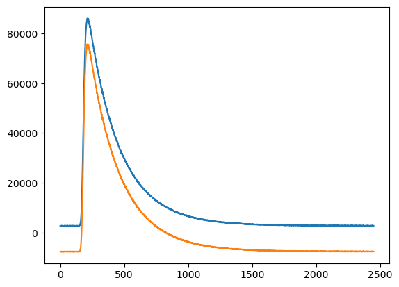
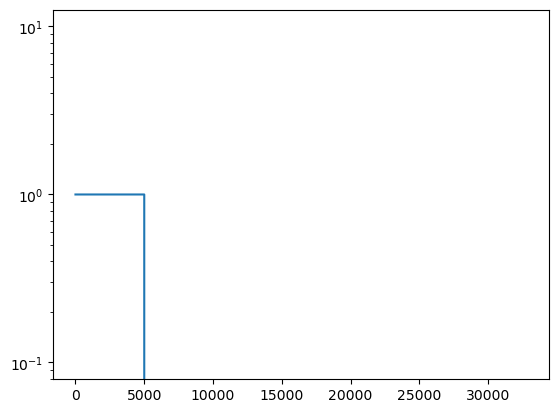
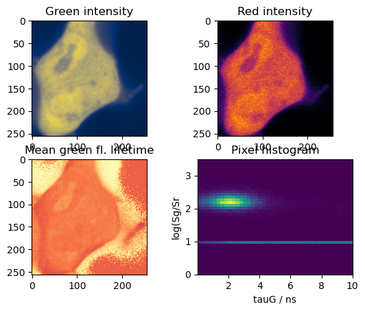
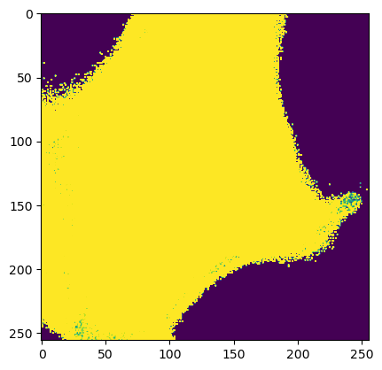

14.1. Imaging#
14.2. Mean lifetime#
14.3. Formats#
Content unclear => ask Suren
14.4. pg4 file#
14.4.1. Parameters from data?#
Y pixel: row index X pixel: column index Green Count Rate (KHz): Number of green photons divided by pixel duration Number of Photons (green): Number of green photons Pixel Number: (Y Pixel) * (Number of Y Pixels) + X Pixel Parameters from fit? ——————– Number of Photons (fit window) (green) tau (green) gamma (green) r0 (green) rho (green) BIFL scatter fit? (green) 2I: P+2S? (green) rS (green) rE (green) 2I (green) Ng-p-all Number (green) of photon in parallel channel Ng-s-all Number (green) of photon in perpendicular channel Ng-all Number of (green) photons
14.5. pr4 file#
14.5.1. Parameters from data?#
Y pixel: row index X pixel: column index Red Count Rate (KHz): Number of red photons divided by pixel duration Number of Photons (red): Number of green photons Pixel Number: (Y Pixel) * (Number of Y Pixels) + X Pixel Parameters from fit? ——————– Number of Photons (fit window) (red) tau gesamt (red) gamma (red) Chi2 (red) rS (red) rE (red) rC (red) Nr-p-all Number of (red) photons in parallel channel Nr-s-all Number of (red) photons in perpendicular (senkrecht) channel Nr-all Number of (red) photons
14.6. Overview#
In confocal laser scanning microscopy (CLSM) the sample is scanned by a laser beam either by moving the sample over a parked (fixed) laser beam (stage scanning) or by deflecting the laser and moving the position of the exciting on a fixed sample (laser scanning). In both cases, the position of the detection volume within the sample needs to be saved in the recorded TTTR event stream. In the section Theory the basics of CLSM data are described. In the section Image construction basic
python functions are used to create an CLSM image using TTTR objects. In the section CLSMImage it is explained how to use tttrlib’s C++ interface to efficiently create CLSM images and different CLSM representations, e.g., intensity images, mean micro time images are presented with a brief application and example source-code. Moreover, for an CLSM image the resolution is :ref:estimated<frc-image>) by Fourier Ring Correlation and it is described how CLSM markers can be analyzed
only given the photon stream using data from an Leica SP8 a :ref:example<LeicaSp8Marker>.
14.7. Applications#
14.7.1. Representations#
The are several ways how the data contain in CLSM images can be represented and analyzed. For instance, images can be computed where every pixel contains an average fluorescence lifetime or an intensity. A few representations for CLSM data and scripts how to generate these representations are outlined here.
#.. plot:: ../examples/imaging/imaging_representations.py
The figure displayed above corresponds to a live-cell FLIM measurement of eGFP. The fluorescent label eGFP is often used as an donor fluorophore in FRET experiments. In the image shown above, eGFP was measured in the absence of FRET. The intensity image shows a non uniform intensity in the cell. However, an image of the mean arrival time reveals as expected a uniform distribution. Inspecting the fluorescence decay curve of the corresponding image reveals a fluorescence decay that is not curved and hence likely single exponential.
Below a few applications are presented.
14.7.2. Intensity#
An intensity image of a CLSMImage instance that has been filled with photons can be created by counting the number of photons in each pixel. This can either be accomplished by iterating over the frames, lines, and pixels or by using the method fill_pixels of a CLSMImage instance.
import tttrlib
tttr_data = tttrlib.TTTR('./data/pq/ht3/PQ_HT3_CLSM.ht3', 'HT3')
channels = (0, 1)
reading_parameter = {
"tttr_data": tttr_data,
"marker_frame_start": [4],
"marker_line_start": 1,
"marker_line_stop": 2,
"marker_event_type": 1,
"n_pixel_per_line": 256, # if zero n_pixel_per_line = n_lines
"reading_routine": 'default',
"fill": True,
"channels": channels
}
clsm_image = tttrlib.CLSMImage(**reading_parameter)
# option 1
n_frames = clsm_image.n_frames
n_lines = clsm_image.n_lines
n_pixel = clsm_image.n_pixel
intensity_image = np.zeros((n_frames, n_lines, n_pixel))
for frame_idx, frame in enumerate(clsm_image):
for line_idx, line in enumerate(frame):
for pixel_idx, pixel in enumerate(line):
n_photons = len(pixel.tttr_indices)
intensity_image[frame_idx, line_idx, pixel_idx] = n_photons
# option 2 - using the C++ method
intensity_image = clsm_image.fill_pixels(tttr_data, channels)
Iterating large images and multiple pixels in python generates a large overhead. Hence, the recommended procedure that is equivalent to the code above to generate intensity images is the second option.
14.7.3. Mean micro time#
To create an image of the mean micro times in a pixel the method get_mean_micro_time_image of a CLSMImage instance has to be provided with a TTTR object the method uses the tttr indices of the photons stored in the CLSMPixel objects to look-up the micro times of the respective photons. The micro times of every pixel are average to yield an average arrival time of the photons in a pixel.
tttr_data = tttrlib.TTTR('./data/pq/ht3/PQ_HT3_CLSM.ht3', 'HT3')
channels = (0, 1)
reading_parameter = {
"tttr_data": tttr_data,
"marker_frame_start": [4],
"marker_line_start": 1,
"marker_line_stop": 2,
"marker_event_type": 1,
"n_pixel_per_line": 256, # if zero n_pixel_per_line = n_lines
"reading_routine": 'default',
"fill": True,
"channels": channels
}
clsm_image = tttrlib.CLSMImage(**reading_parameter)
minimum_number_of_photons = 3
image_mean_micro_time = clsm_image.get_mean_micro_time_image(
tttr_data,
minimum_number_of_photons=minimum_number_of_photons
)
n_frames, n_lines, n_pixel = image_mean_micro_time.shape
n_frames == 40 # True
n_lines == 256 # True
n_pixel == 256 # True
The pixel-wise average arrival time over the frames in a CLSMImage object is computed by the method get_mean_micro_time_image when the optional parameter stack_frames is set to True.
image_mean_micro_time_stack = clsm_image.get_mean_micro_time_image(
tttr_data,
minimum_number_of_photons=minimum_number_of_photons,
stack_frames=True
)
n_frames, n_lines, n_pixel = image_mean_micro_time_stack.shape
n_frames == 1 # True
avg_2 = image_mean_micro_time.mean(axis=0) # do not use such average
np.allclose(image_mean_micro_time_stack, avg_2) # False
Note
The average over a stack of average arrival times and the stacked and averaged arrival times differ. If the average arrival time is computed for every frame and then the arrival times are averaged, the number of photons that resulted in the average is not considered. Thus, the two averages in the code-block displayed above differ.
14.7.4. Average fluorescence lifetime#
The moments of the fluorescence intensity decay can be directly computed also considering the instrument response function (IRF) :cite:isenberg_studies_1973.
#.. plot:: ../examples/imaging/imaging_mean_tau.py
The shown example computes for every pixel a mean fluorescence lifetime considering the IRF that is provided as a tttrlib.TTTR object.
14.7.5. Phasor#
The phasor method’s is a model free analysis that has certain advantages over conventional nonlinear curve fitting, which is computationally-intensive and can be sensitive to potential inaccuracies due to correlations between computed terms. The phasor analysis provides a robust approach to investigate variations in fluorescence lifetime measurements .
#.. plot:: ../examples/imaging/imaging_phasor.py
Top phasor without instrument response function (IRF) correction. Bottom phasor with IRF correction.
14.7.6. Fluorescence decay histograms#
The micro times of the photons in every pixel can be binned to yield a fluorescence decay histogram for every pixel in the CLSM image. This is implemented in the method get_fluorescence_decay_image of CLSMImage objects.
image_decay = clsm_image.get_fluorescence_decay_image(
tttr_data,
stack_frames=False
)
n_frames, n_lines, n_pixel, n_micro_time_bins = image_decay.shape
n_frames == 40 # True
n_micro_time_bins == 32768
image_decay = clsm_image.get_fluorescence_decay_image(
tttr_data,
stack_frames=True,
micro_time_coarsening=256
)
n_frames, n_lines, n_pixel, n_micro_time_bins_2 = image_decay.shape
n_micro_time_bins_2 == n_micro_time_bins // 256
n_frames == 1 # True
When the optional parameter stack_frames is set to True (the default value is False). The optional parameter micro_time_coarsening is used to decrease the resolution of the fluorescence decay histogram. The default value of micro_time_coarsening is 1 and the micro time resolution is used as is. A value of 2 decreases the micro time resolution by a factor of 2.
Note
A four dimensional array may consume a considerable amount of memory. Thus, use appropriate values for the parameters of get_fluorescence_decay_image to reduce the memory consumption.
14.7.7. Pixel averaged decays#
Using selection masks the signal to noise of the fluorescence decays can be greatly improved to allow for a detailed analyis. Here it is briefly outlined, how pixels are selected and fluorescence decays of these pixel sub-populations can be created.
#.. plot:: ../examples/imaging/imaging_pixel_masks.py
Pixels are selected by a pixel mask, i.e., arrays of the same size as a CLSM image. The micro times of the photons associated to the selected pixels can be binned into fluorescence decay histograms. This way, fluorescence decays of regions of interest (ROIs) can be created. ROIs can be defined by normal bitmap images. A different ROI can be used for each frame in an CLSM image.
from matplotlib.pyplot import imread
import tttrlib
import numpy as np
tttr_data = tttrlib.TTTR('./data/pq/ht3/PQ_HT3_CLSM.ht3', 'HT3')
channels = (0, 1)
reading_parameter = {
"tttr_data": tttr_data,
"marker_frame_start": [4],
"marker_line_start": 1,
"marker_line_stop": 2,
"marker_event_type": 1,
"n_pixel_per_line": 256, # if zero n_pixel_per_line = n_lines
"reading_routine": 'default',
"fill": True,
"channels": channels
}
clsm_image = tttrlib.CLSMImage(**reading_parameter)
mask = imread("./data/aux/PQ_HT3_CLSM_MASK.png").astype(np.uint8)
selection = np.ascontiguousarray(
np.broadcast_to(
mask,
(clsm_image.n_frames, clsm_image.n_lines, clsm_image.n_pixel)
)
)
kw = {
"tttr_data": tttr_data,
"selection": selection,
"selection": selection,
"tac_coarsening": 16,
"stack_frames": True
}
decay = clsm_image.get_average_decay_of_pixels(**kw)
decay.shape == (1, 2048)
kw["stack_frames"] = False
decay_2 = clsm_image.get_average_decay_of_pixels(**kw)
decay_2.shape == (40, 2048)
The decays of the different frames can be stacked by setting the parameter stack_frames to True.
Note
To keep the memory consumption low, we use only 8 bit per element in the selection mask.
14.7.8. Correlation function#
Every pixel is defined by a list of TTTR indices. To these indices a macro time and micro time are associtate. Hence, correlation functions can be computed.
14.7.9. Image correlation spectroscopy#
Fluorescence fluctuation spectroscopy can be combined with fluorescence imaging. Image correlation spectroscopy (ICS) allows to extracted molecular properties from microscopy images :cite:petersen_quantitation_1993. There are many flavours of ICS. For conventional CLSM imaging the most relevant is raster image correlation spectroscopy (RICS) that can be used to study the molecular translational diffusion constant (D), absolute concentration (c), and intermolecular binding constants of
diffusive molecules :cite:digman_measuring_2005 :cite:digman_fluctuation_2005 :cite:digman_detecting_2009. The static method CLSMImage.compute_ics allows to correlate CLSMImage objects and stacks of images for ICS analysis.
#.. plot:: ../examples/imaging/imaging_ics_tttrlib.py
The figure above displays an image and the corresponding image correlation for a region of interest (ROI) that is highlighted by a red square. tttrlib supports squared ROIs that can be background corrected. However, in general ICS can be applied to arbitrarily shaped ROIs is :cite:hendrix_arbitrary-region_2016.
With a few lines of python code the computed correlations can be analyzed and fitted to yield diffusion coefficients and concentrations.
#.. plot:: ../examples/imaging/imaging_ics_fit.py
The figure above displays an image, the corresponding ICS, and the weighted residuals of the model and the analysis results.
Note
For RICS the line durations (line time) and the pixel duration (pixel time) need to be known. These parameters can be setup. Moreover, some setup configurations use “photons” event types to record special events. Different microscopes may use different markers. For common microscopes such as the Leica SP5 and Leica SP8 ready-to-use image processing routines are provided.
Autocorrelations
Spatiotemporal ICS (STICS)
Cross-correlations (
14.8. Image markers#
14.8.1. General#
The position of the laser in the TTTR event stream is encoded by injecting markers into the event stream the report on the laser position. Some manufactures present these markers as special “”events”” that are distinguished from normal photon events. Some manufacturers use the same routing channel numbers for markers and for photon detection channels. To distinguish photons from markers,TTTR objects present for every event an additional event type specifier (see :doc:tttr_objects).
The position of the laser on the sample is mostly defined by the following markers
The position of the laser on the sample is mostly defined by three markers:
A frame marker
A line start marker
A line stop marker
The line start and the line stop marker define a valid region of the image. In confocal laser scanning microscopy (CLSM) the laser beam is usually repositioned between the line stop and the line start marker. The detectors are usually switched on in this period and register how the laser is fast repositioned on the sample. The TTTR stream can be also processed outside of this valid region. However, then the pixel sizes may not be uniform.
The assignment of the markers to channels depends on the configuration of the microscope. Below it is briefly outlined how these markers can be assigned to channels.
Below a typical traces of channel numbers for special events are shown.
#.. plot:: ../examples/imaging/imaging_special_markers.py
To the top a longer trace of special events channel numbers is shown. As can be seen by inspecting the traces of special events, channel number 4 is followed by an interleaved sequence of channel number 1 and channel number 2. This identifies channel 4 as frame number and channel 1 and 2 as, line start and line stop, respectively. As is shown for the end of the special event channel trace, the last frame marker is followed by an incomplete frame. This is not uncommon. Hence, the photons registered following the last frame number should be rejected, as they would result in an incomplete image.
The markers markers and the photons between the markers need to be analyzed to form an image.
14.9. CLSMImage#
14.9.1. Data structure#
CLSM recordings are not imaging data in a classical sense. There is no strict definition of a pixel and in pulsed time-resolved (tr) experiments that can have multiple lasers (Pulsed Interleaved Excitation, PIE) and multiple detectors that resolve the polarization and the spectral ranges of the photons (Multiparameter Fluorescence Detection, MFD). Hence, a standard imaging data structure is not a very handy format to operate on time-resolved PIE-MFD CLSM data. Moreover, CLSM data can encode multiple frames, either from time-series or 3D stacks.
tttrlib handles CLSM images by the CLSMImage class. The CLSMImage class implements a data structure for CLSM images that can be used to query photons of pixels in frames, lines, and pixels of CLSM data. For that, CLSMImage processes TTTR objects. The photons contained in the TTTR object are grouped based on the specified markers. After reading the TTTR data into a TTTR object, the TTTR object is used to create a new CLSMImage object.
14.9.2. Use Python and C/C++#
As was pointed out above based on a few lines of Python source code (see :ref:Image scanning:Confocal laser scanning:Theory) to construct an image
1. the frame marker
2. the line start marker
3. the line stop marker
4. the detector channel numbers
5. the number of pixels per scanning line
need to be specified. Based on these parameters, the indices of the photons in the TTTR data stream are assigned to frames, lines, and pixels. When creating a CLSMImage object with a TTTR object that contains the photon stream a set of CLSMFrame, CLSMLine, and CLSMPixel objects are create.
from __future__ import print_function
import tttrlib
import numpy as np
import pylab as p
data = tttrlib.TTTR('./examples/pq/ht3/PQ_HT3_CLSM.ht3', 1)
frame_marker = 4
line_start_marker = 1
line_stop_marker = 2
event_type_marker = 1
pixel_per_line = 256
image = tttrlib.CLSMImage(
data,
frame_marker,
line_start_marker,
line_stop_marker,
event_type_marker,
pixel_per_line,
reading_routine='default'
)
Note
In the example above the reading routine is specified to the default (=0). If no reading routine is specified the CLSMImage class uses the channel number of an event to identify line start/stops and frame marker. In Leica SP8 PTU files the micro time of an photon events encodes the type of the event. Here, a different reading routine needs to be specified.
The last parameter (here 0) specifies the reading routine (parameter = reading_routine) for the line and frame markers. The supported marker types are shown in the table below.
+--------------------------+--------+----------------+
| Line, Framer marker type | Option |
+==========================+========+================+
|Default (routing channel) |default |
+--------------------------+-------------------------+
|Leica SP8 (micro time) |SP8 |
+--------------------------+-------------------------+
|Leica SP5 (micro time) |SP5 |
+--------------------------+-------------------------+
As illustrated by the code shown below, every CLSMImage object may contain multiple CLSMFrame objects , every CLSMFrame contain a set of CLSMLine objects, and every CLSMLine object contains multiple CLSMPixel objects. The number of CLSMPixel objects per line is specified upon instantiation if the CLSMImage object (see code example above). The CLSMFrame, CLSMLine, and the CLSMPixel classes derive from the TTTRRange class and provide access to the
associated TTTR indices that mark the beginning and the end of the respective object via the function get_start_stop (see example below).
frames = image.get_frames()
frame = frames[0]
print("Frame")
print("-----")
print("start, stop: ", frame.get_start_stop())
print("start time, stop time: ", frame.get_start_stop_time())
print("duration: ", frame.get_duration())
lines = frame.get_lines()
line = lines[0]
print("Line")
print("-----")
print("start, stop: ", line.start_stop
print("start time, stop time: ", line.get_start_stop_time())
print("duration: ", line.get_duration())
pixels = line.get_pixels()
pixel = pixels[100]
print("Pixel")
print("-----")
print("start, stop: ", pixel.get_start_stop())
print("start time, stop time: ", pixel.get_start_stop_time())
print("duration: ", pixel.get_duration())
Object of the CLSMImage class store the frame, line, and pixel location of the TTTR data stream that was used to create the CLSMImage object. Next, to determine images, the detection channels of interest need to be specified using the method fill_pixels. The method fill_pixels populates the
Note
The pixels are not filled with start and stop indices and associated start and stop times, as the channels of the image have not been defined.
To fill the pixels, it has to be defined, which detection channels are used. Next, the pixels can be filled. When filling the pixels, to every pixel a start and stop time in the TTTR data stream is associated.
channels = (0, 1)
image.fill_pixels(data, (0, 1))
print("Pixel")
print("-----")
print("start, stop: ", pixel.get_start_stop())
print("start time, stop time: ", pixel.get_start_stop_time())
print("duration: ", pixel.get_start_stop_time())
image_intensity = image.intensity
image_decay = image.get_fluorescence_decay_image(data, 32)
p.imshow(image_intensity.sum(axis=0))
p.show()
p.semilogy(image_decay.sum(axis=(0,1,2)))
p.show()
To yield the mean time between excitation and detection of fluorescence the method get_mean_micro_time_image can be used. The example shown below shows the counts per pixel for all frames (top, left), the counts per pixel for frame number 30 (top, right), and the mean time between excitation and detection of fluorescence (bottom, left). The function get_mean_micro_time_image takes in addition to the TTTR data an argument that discriminates pixels with less than a certain amount of
photons (below 3 photons). As can be seen by this analysis, the mean time between excitation and detection of fluorescence is fairly constant over the cell, while the intensity varies in this particular sample.
For more detailed analysis the fluorescence decays contained in the 4D image (frame, x, y, fluorescence decay) returned by get_fluorescence_decay_image can be used, e.g., by analyzing fluorescence decay histograms. A full example that generates a fluorescence decay containing all photons of the 30 frames is shown below.
14.9.3. Creating CLSM images#
General reading framework ^^^^^^^^^^^^^^^^^^^^^^^^^ When a new CLSMImage object is created, the markers are processed. If the number of lines is set to zero the number of pixels per line is set to the number of lines. To create CLSM image the TTTR object needs to be provided in addition to the markers. The markers can be manually specified.
filename = './test/data/imaging/pq/ht3/pq_ht3_clsm.ht3'
data = tttrlib.TTTR(filename, 'HT3')
reading_parameter = {
"marker_frame_start": [4],
"marker_line_start": 1,
"marker_line_stop": 2,
"marker_event_type": 1,
"n_pixel_per_line": 256, # if zero n_pixel_per_line = n_lines
"reading_routine": 'default'
}
clsm_image = tttrlib.CLSMImage(
tttr_data=data,
**reading_parameter
)
The frames in a CLSMImage object are CLSMFrame objects. Lines in frame are CLSMLine objects and pixels in lines are CLSMPixel objects. The CLSMFrame, CLSMLine, and the CLSMPixel class inherent from the TTTRRange class (see :ref:TTTR-Objects:TTTR ranges). Briefly, TTTRRange objects keep track of the photon indices in a given range.
After a CLSMImage object is created without specifying the channels, it is an container that keeps track of the beginning and end of the frames, lines. The pixels in the lines are empty and do not refer to photon indices. The frames, lines, and pixels of a CLSMImage object can be accessed by their index.
clsm_image = tttrlib.CLSMImage(
tttr_data=data,
**reading_parameter
)
frame = clsm_image[0]
line = frame[100]
pixel = line[100]
len(pixel.tttr_indices) == 0 # True
The indices of the photons in a pixel can be accessed by the attribute tttr_indices. To fill the pixels, the channel of interest needs to be specified by its channel number.
clsm_image.fill_pixels(
tttr_data=data,
channels=[0]
)
len(pixel.tttr_indices) == 0 # False
When filling the pixels with photons that are identified via their channel number in the tttr data, multiple channels can be specified.
Alternatively, the channels can be specified when a CLSMImage object is created.
filename = './test/data/imaging/pq/ht3/pq_ht3_clsm.ht3'
reading_parameter = {
"tttr_data": tttrlib.TTTR(filename, 'HT3')
"marker_frame_start": [4],
"marker_line_start": 1,
"marker_line_stop": 2,
"marker_event_type": 1,
"n_pixel_per_line": 256, # if zero n_pixel_per_line = n_lines
"reading_routine": 'default',
"fill": True,
"channels": [0, 2]
}
clsm_image = tttrlib.CLSMImage(**reading_parameter)
len(pixel.tttr_indices) != 0 # True
Here, the optional parameter “channels” in combination with the optional parameter “fill” instruct the constructor of CLSMImage to fill the pixels with events that are identified by the routing channel numbers 0 and 2.
After filling the pixels with tttr indices (photon indices) the CLSM container can be used to create different representations of the data. A representation of the data is for instance an intensity image that counts the photons in each pixel, a mean micro time image, a 3D map that contains a fluorescence decay histogram at every pixel, or an 3D map that contains a correlation function that is computed over the photons in each pixel.
Reading PTU files ^^^^^^^^^^^^^^^^^ PicoQuant <https://www.picoquant.com/>_ PTU files can contain additional image information in the file file header that inform the frame marker, the line marker. This data can be accessed by data attribute of the TTTR’s object header. Thus, for CLSMImage instances of PTU files can be created by
tttr_data = tttrlib.TTTR('./data/imaging/pq/Microtime200_HH400/beads.ptu', 'PTU')
clsm = tttrlib.CLSMImage(tttr_data)
The PTU files of the Leica SP5 and the Leica SP8 use a non-standard way of encoding line markers. Thus the reading routing needs to be specified. For other CLSM PTU data CLSMImage instances can be directly created
tttr_data = tttrlib.TTTR('./data/imaging/leica/sp5/LSM_1.ptu', 'PTU')
clsm_image = tttrlib.CLSMImage(tttr_data, reading_routine = 'SP5')
PTU files can also be opened by manually providing the marker parameters as described above.
14.9.4. Copying CLSMImage instances#
A new CLSMImage object can be created using an existing CLSMImage object as a template.
tttr_data = tttrlib.TTTR('./test/data/imaging/pq/ht3/pq_ht3_clsm.ht3', 'HT3')
reading_parameter = {
"tttr_data": tttr_data,
"marker_frame_start": [4],
"marker_line_start": 1,
"marker_line_stop": 2,
"marker_event_type": 1,
"n_pixel_per_line": 256, # if zero n_pixel_per_line = n_lines
"reading_routine": 'default',
"fill": True,
"channels": [0, 2]
}
clsm_image_1 = tttrlib.CLSMImage(**reading_parameter)
clsm_image_2 = tttrlib.CLSMImage(source=clsm_image_1, fill=True)
When creating a CLSMImage object using another CLSMImage object as a source the frames, lines, and pixels are copied. When the optional parameter fill is set the tttr indices of the photons are copied as well.
14.9.5. Exporting as TIFF#
All representations of the FLIM data are numpy <https://numpy.org/>_ arrays that can be written of standard image data formats for instance using the input/output functionality of OpenCV <https://opencv.org/>_ or the library tiffile <https://pypi.org/project/tifffile/>_
The sample code below opens a PTU dataset from a Leica SP5 and writes an intensity image to a TIFF image stack.
import tifffile
tttr_data = tttrlib.TTTR('./data/imaging/leica/sp5/LSM_1.ptu', 'PTU')
clsm_image = tttrlib.CLSMImage(tttr_data, reading_routine = 'SP5')
output_file = 'intensity_image.tif'
img_stack = clsm.intensity
img_stack = np.array([i.T for i in img_stack])
img_stack *= (2 ** 16 - 1) // np.max(img_stack)
img_stack = img_stack.astype(dtype=np.uint16)
with tifffile.TiffWriter(output_file, imagej=True) as tif:
tif.save(img_stack)
Other representations can be saved accordingly as TIFF images.
Many representations use float, doubles, or long integers (64 bit) that are often not fully supported by standard image formats. Make sure that images are properly scaled and quantized before saving.
============================== Image correlation spectroscopy ==============================
14.10. Decay moments#
[1]:
[2]:
[3]:
tttr_green_prompt
[3]:
tttrlib.TTTR("/home/tpeulen/dev/tttrlib/doc/modules/../../tttr-data/imaging/zeiss/eGFP_bad_background/eGFP_bad_background.ptu", "PTU")
[4]:
Nbr. Photons: 31005074.0
background_fraction: 0.18311995481771795
/opt/tljh/user/lib/python3.9/site-packages/numpy/core/getlimits.py:500: UserWarning: The value of the smallest subnormal for <class 'numpy.float64'> type is zero.
setattr(self, word, getattr(machar, word).flat[0])
/opt/tljh/user/lib/python3.9/site-packages/numpy/core/getlimits.py:89: UserWarning: The value of the smallest subnormal for <class 'numpy.float64'> type is zero.
return self._float_to_str(self.smallest_subnormal)

[6]:
[6]:
[<matplotlib.lines.Line2D at 0x7f2eca8ef430>]

[9]:
/tmp/ipykernel_1631539/3861523619.py:31: RuntimeWarning: divide by zero encountered in log
lg_sg_sr = np.log(masked_green / masked_red)

[67]:
mean_tau_green
[67]:
array([[[-60.60314757, -69.968409 , -65.06852312, ..., 0. ,
0. , 0. ],
[-63.70403184, -61.16748977, -60.42777429, ..., 0. ,
0. , 0. ],
[-55.41072919, -71.2040123 , -64.28373794, ..., 0. ,
0. , 0. ],
...,
[-67.58461232, -62.73440897, -76.13942094, ..., 0. ,
0. , 0. ],
[-57.63085458, -70.08157044, -84.12412907, ..., 0. ,
0. , 0. ],
[-71.81180947, -64.24788885, -69.64703284, ..., 0. ,
0. , 0. ]]])
[5]:
plt.imshow(mean_tau_green.mean(axis=0), vmin=0.0, vmax=3.0)
[5]:
<matplotlib.image.AxesImage at 0x7fb7ddbd3fd0>

[12]:
np.min(mean_tau_green)
[12]:
nan
[ ]: